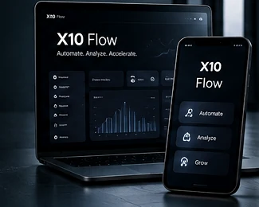

Product thinking that compounds into better delivery.
Alongside project work, X10 Think explores reusable product patterns, internal tooling and focused experiments. We publish only what is real, useful and ready to explain.

Build once. Learn repeatedly.
Our product practice turns recurring engineering lessons into cleaner foundations for future systems without pretending that internal experiments are launched products.
Business system foundations
Reusable patterns for role-based access, operational workflows, approvals, dashboards and notifications.
- Authentication & permissions
- Workflow states & auditability
- Operational dashboards
AI workflow patterns
Practical ways to add AI assistance without making the entire product dependent on an opaque model response.
- Human review points
- Structured outputs
- Fallback-safe experiences
Delivery accelerators
Internal conventions and components that reduce setup work while keeping architecture understandable.
- Project structure
- Interface patterns
- Quality & release checks
Experiment without overclaiming.
A lab track has to answer a useful question: can this interaction, architecture or automation make a real workflow simpler, faster or clearer?
Prototype
Test the smallest useful version of an idea before expanding scope.
Measure
Check whether the concept actually improves the workflow it was designed for.
Harden
Only successful concepts move toward production engineering, security and operational readiness.
Publish honestly
When a product becomes public, its status and capabilities should be clear and verifiable.
Have a product idea that needs a technical path?
Bring the problem, target users and business goal. We can help shape the product, validate the workflow and build the right first version.